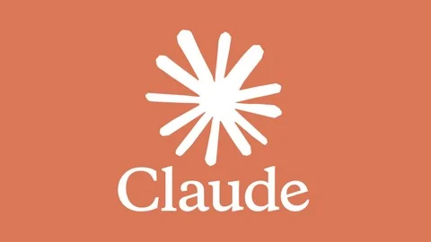
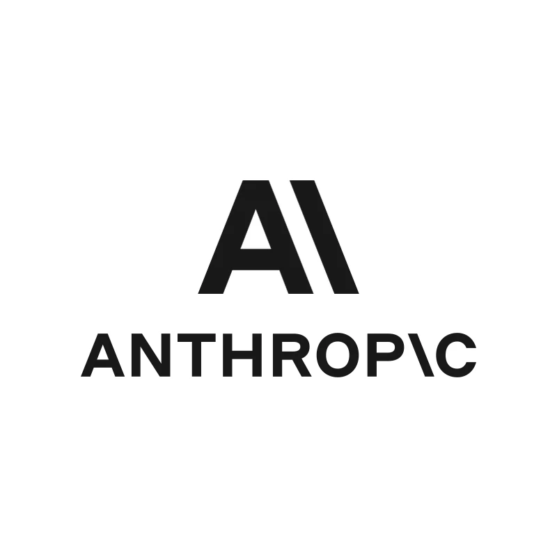
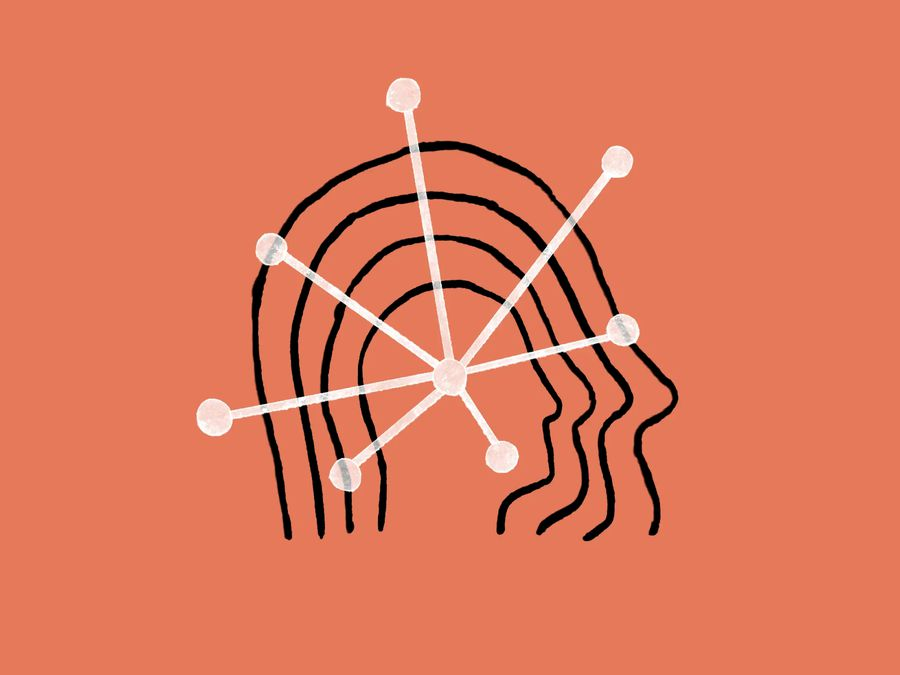
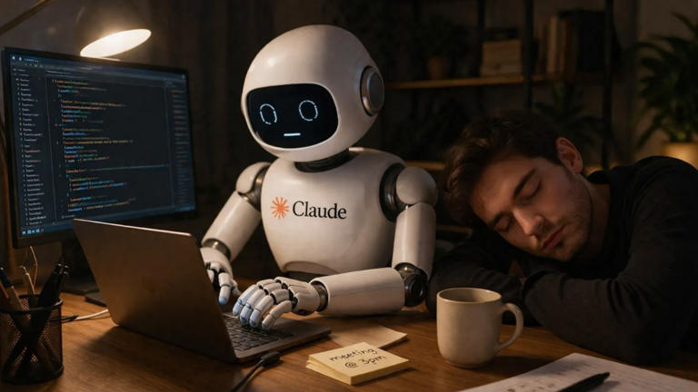

Claude é o modelo de inteligência artificial desenvolvido pela Anthropic focada em segurança, ética e transparência.


Criada por ex-pesquisadores da OpenAI, decidiram criar uma ia focada em direitos humanos reduzindo comportamentos preconceituosos.
Método de treinamento onde o modelo é alinhado com princípios, focando nos direitos humanos e privacidade.

Possui três modelos: Opus para alto raciocínio, Sonnet para dia-a-dia e Haiku para tarefas simples.
Avalia grande volume de dados, realiza uma análise completa, simulações em tempo real e muito mais.
O Claude colabora com o usuário, criando uma parceria inteligente focada em entender, apoiar e evoluir ideias.
